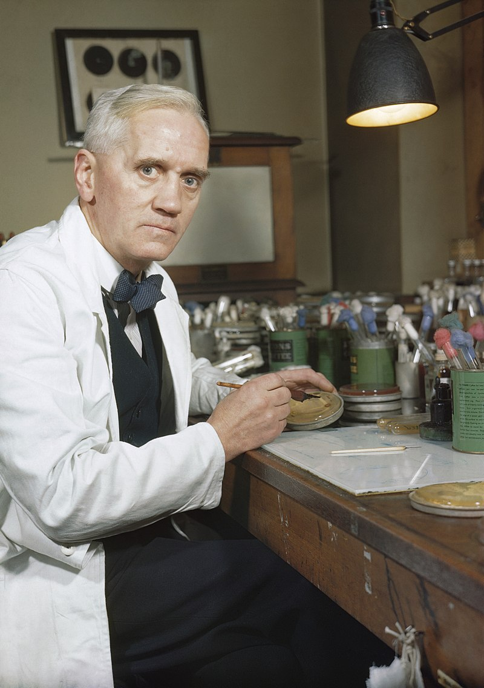

Alexander Fleming
The man who invented penicilina

Synthetic Production of Penicillin Professor Alexander Fleming, holder of the Chair of Bacteriology at London University, who first discovered the mould Penicillin Notatum.
Here in his laboratory at St Mary's, Paddington, London (1943).
Here is a timeline of Alexander Fleming's life:
- 1881 - Born in Lochfield, Scotland.
- 1906 - Finish his studies in Medicine in London University.
- 1928 - Discover peniciline and its properties.
- 1945 - Wins the Nobel Prize in Medicine.
- 1955 - Dies in London from an heart attack.